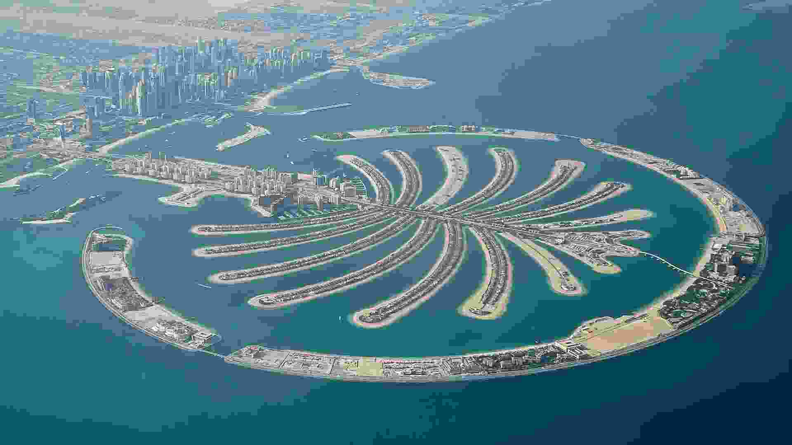
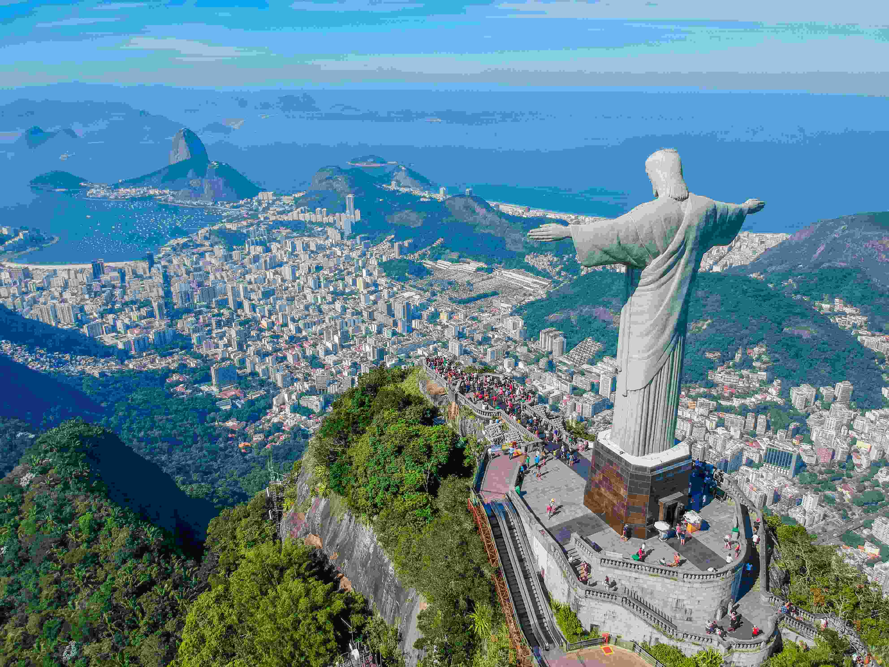
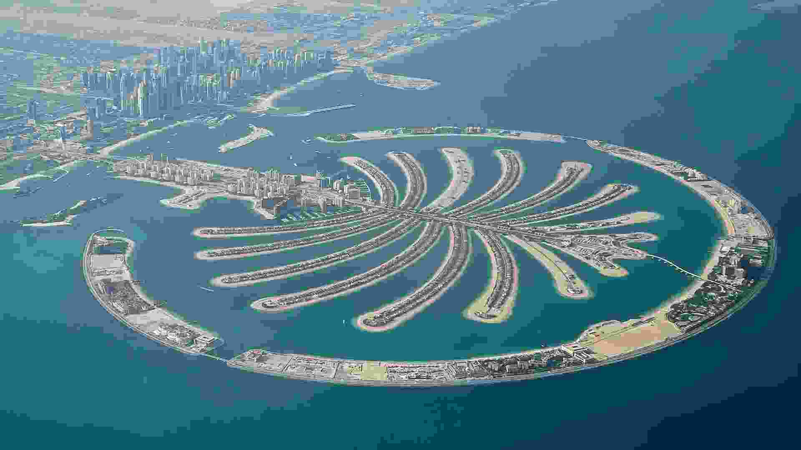
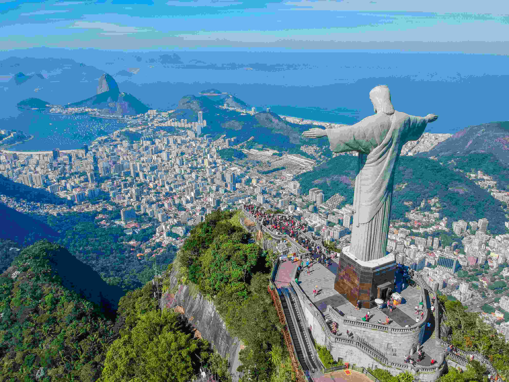

Джумейра является одним из наиболее дорогих жилых районов Дубая. Ещё 30-40 лет назад здесь проживали лишь несколько десятков местных рыбаков со своими семьями, иностранные рабочие и мелкие торговцы. В настоящее время этот район застроен виллами, крупными супермаркетами, туристической инфраструктурой.
В 2001—2008 годах перед побережьем Джумейры был создан первый из группы Пальм-островов - искусственный остров Пальма Джумейра. На западной границе района Джумейры находится квартал небоскрёбов Дубай Марина и цепь высотных зданий - Озёрные башни Джумейра. Пальмовые острова увеличивают береговую линию Дубая в общей сложности на 520 км.
Палм-Джумейра является самым маленьким и самым оригинальным из трёх островов (Палм-Джумейра, Палм-Джабаль-Али, Палм-Дейра). Он представляет собой искусственный остров в виде пальмового дерева, состоящего из ствола, 16 листьев и окружающего остров полумесяца, представляющего собой 11-километровый волнорез. Размер острова 5 километров на 5 километров и его общая площадь составляет более 800 футбольных полей. Остров связан с материком 300-метровым мостом, а полумесяц связан с верхушкой пальмы подводным туннелем.
Ма́чу-Пи́кчу (Machu Piсchu, в переводе с кечуа — «старая гора») — древний город в Южной Америке, находящийся на территории современного государства Перу, в шести километрах от посёлка Агуас-Кальентес. Расположен на вершине горного хребта на высоте 2400 метров над уровнем моря, господствующего над долиной реки Урубамбы. Испанские конкистадоры так и не добрались до Мачу-Пикчу и этот город не был разрушен.
Более чем на 400 лет этот город был забыт и заброшен. Его нашёл американский исследователь из Йельского университета, профессор Хайрам Бингем 24 июля 1911 года, после того как лётчики увидели Мачу-Пикчу с самолёта.
Мачу-Пикчу находится в труднодоступном регионе. Для поддержки туризма была построена железная дорога до соседнего города Агуас-Кальентес. От железнодорожной станции Агуас-Кальентес до Мачу-Пикчу ходит автобус, который преодолевает восемь километров крутого подъёма по серпантину. ЮНЕСКО выступило против строительства канатной дороги, чтобы ограничить потоки туристов.
Ста́туя Христа́-Искупи́теля (порт. Cristo Redentor) — статуя Иисуса Христа в стиле ар-деко, расположенная на вершине горы Корковаду в Рио-де-Жанейро. Является символом города и Бразилии в целом. Статуя находится на территории национального парка Тижука на высоте 709 метров над уровнем моря.
Высота статуи - 38 м, в том числе пьедестала - 8 м; размах рук - 28 м. Вес - 635 тонн. Являясь самой высокой точкой округи, статуя регулярно (в среднем, четыре раза в год) становится мишенью молний. Католическая епархия специально хранит запас камня, из которого возведена статуя, для восстановления повреждённых молниями частей статуи.
В 1921 году приближающаяся столетняя годовщина национальной независимости Бразилии (1822 г.) вдохновила отцов города — Рио-де-Жанейро тогда был столицей Бразилии — на создание статуи Христа-Искупителя. Постройка статуи продолжалась около девяти лет — с 1922 по 1931 гг.
За последние 45 лет статую дважды ремонтировали — в 1980 и 1990 годах. В 1932 и 2000 годах была проведена модернизация системы ночной иллюминации. В 2003 году подъём, ведущий на смотровую площадку, оборудовали эскалаторами.
Теотиуака́н (город богов) — древний полиэтнический город-государство, расположенный в 50 километрах к северо-востоку от центра города Мехико в муниципалитете Теотиуакан-де-Ариста.
Современные исследователи считают, что площадь этого древнего поселения составляла 26—28 км², а население — свыше 125 тыс. человек. Это один из самых древних и самый крупный в эпоху своего расцвета индейский город доколумбовой Америки, входивший в шестёрку самых крупных городов мира. Развитие цивилизации Теотиуакана по времени совпадает с расцветом Древнего Рима, но история мезоамериканского города оказалась более продолжительной.
Поселение городского типа в этом месте возникло в III веке до н. э., но город сформировался ко II веку н. э. в результате миграции населения с территорий, пострадавших от извержения вулканов. Упадок города начался в середине VI века, когда центральная часть города и святыни были разграблены и сожжены. К середине VII века город был полностью покинут населением. Название Теотиуакан развалинам города дали ацтеки через несколько веков после его исчезновения. Дома в городе были в основном одноэтажными, с плоскими крышами и без окон. Единственным источником воздуха и света служили двери, обязательно выходившие во внутренний открытый дворик. В городе имелись также и многоэтажные здания.
Винкевенские озёра расположены в провинции Утрехт в Нидерландах. С высоты птичьего полёта они похожи на полосатое одеяло из множества узких и длинных островов, расположенных на равном расстоянии друг от друга. Многие острова густо застроены и оборудованы пирсами и причалами.
Озёра имеют искусственное происхождение. В 1850 году здесь нашли залежи торфа. Добывали его с марта по июнь, а затем до сентября топливо просушивали и затем вывозили. Торф в болоте залегал сплошным массивом, но добывали его полосами. Для складирования брикетов топлива оставляли острова, тянущиеся на сотни метров. Их посыпали песком, чтобы поддерживать необходимую для сушки торфа сухость. Со временем между островами образовались провалы, которые заполнились грунтовыми водами. Позднее вода поднялась и болотистая равнина превратилась в озёра с узкими островами. Глубина рукотворных озёр в некоторых местах достигала 50 метров
В наши дни озёра популярны у любителей пеших прогулок и велосипедистов. Они являются частью национального заповедника Ботхол, территория которого открыта для посещений в любое время, кроме месяцев, когда птицы высиживают яйца.